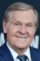

Country:United States, 142 minutes
Spoken languages:English
Genres:Drama, Crime
Director(s):Frank Darabont
Writer(s):Stephen King, Frank Darabont
Video Codec:Unknown
Number: 711


Certification:R
Storyline:
Framed in the 1940s for the double murder of his wife and her lover, upstanding banker Andy Dufresne begins a new life at the Shawshank prison, where he puts his accounting skills to work for an amoral warden. During his long stretch in prison, Dufresne comes to be admired by the other inmates -- including an older prisoner named Red -- for his integrity and unquenchable sense of hope.
Cast: 


Medium: Bluray,
Loaned: No
Aspect ratio: Unknown